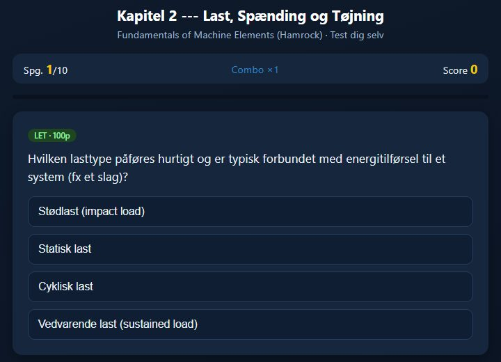
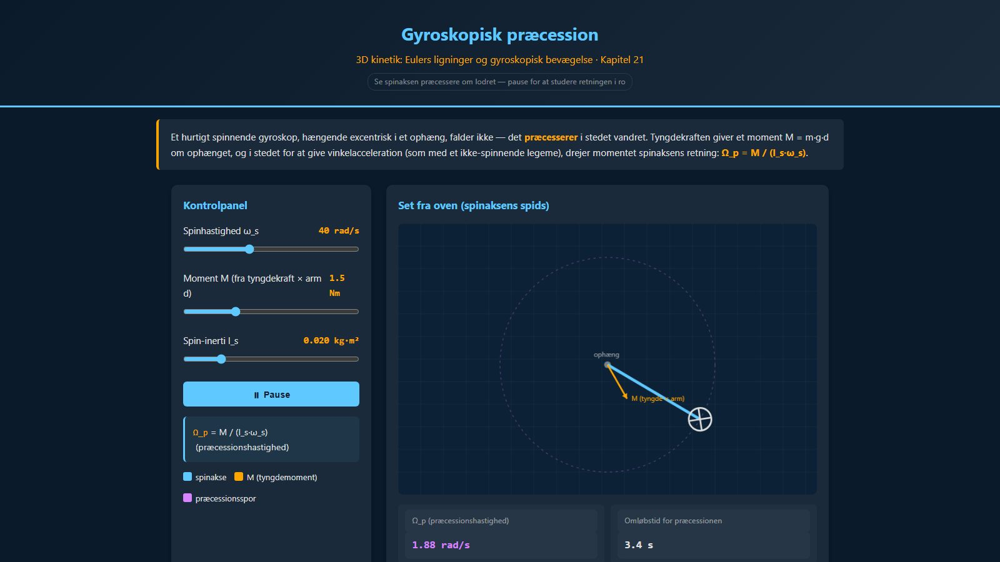
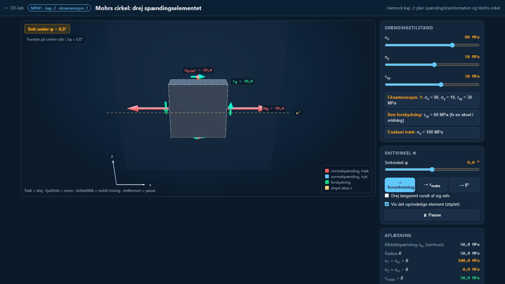
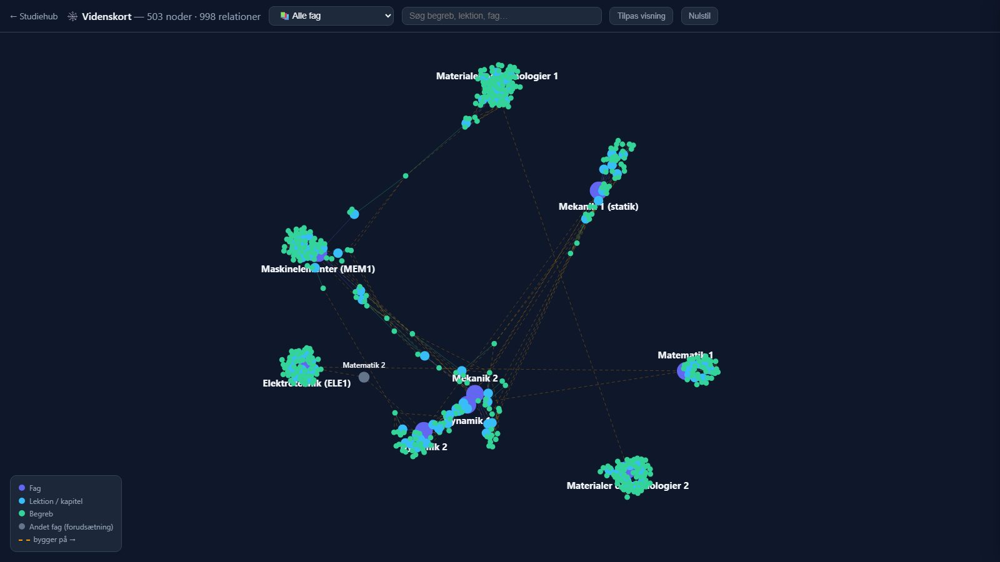
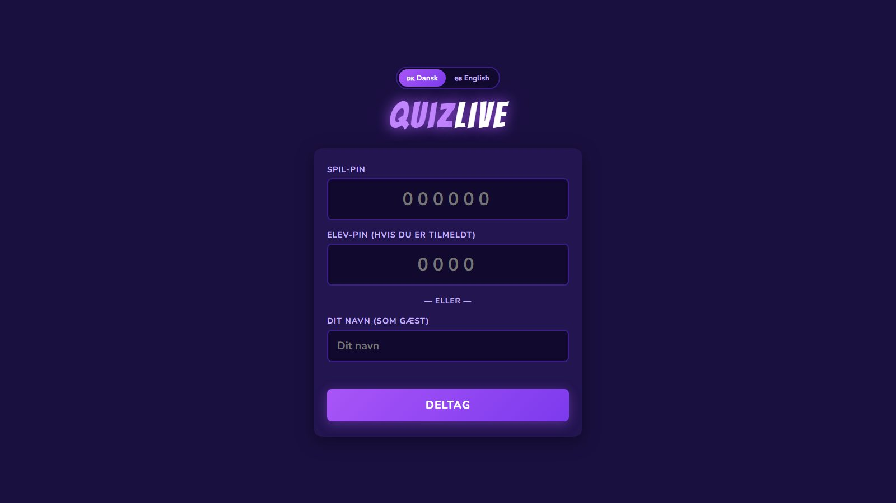

Produktionsteknologi · VIA Horsens
AI som
studiemakker
Sådan har jeg bygget mit eget studiemateriale med Claude, og sådan gør du det inden for reglerne.
Frederik Rasmussen · Maskiningeniør, 3. semester
Udgangspunktet
Pensum er tungt.
Tiden er kort.
Tykke bøger
Engelske lærebøger med hundredvis af sider pr. fag.
Slides er stikord
De giver mening i timen, men sjældent tre uger efter.
Eksamen kræver forståelse
Man skal kunne forklare med egne ord, ikke bare genkende.
Jeg manglede noget mellem slides og bog, noget man kan øve sig på.
Idéen
Én hub til alt mit studiemateriale
43formeloverblik som PDF, ét pr. kapitel
60quizzer med sværhedsgrader og point
55sæt flashcards til formler
100+korte forklaringsvideoer
50+interaktive figurer med skydere
~303D-scenarier i et virtuelt laboratorium
15mundtlige eksamensspørgsmål gennemgået
503begreber koblet i et videnskort
Fag: Maskinelementer, Dynamik, Elektroteknik, Mekanik, Materialer, Matematik · Kører gratis på GitHub Pages
Værktøj 1 · Læs og test dig selv
Formeloverblik + quiz pr. kapitel

- Hver formel har en forklaring af alle symboler
- Sidehenvisning til bogen, så man kan slå op
- Svarene blandes, så man ikke kan gætte sig til svaret
Værktøj 2 · Se fysikken ske
Interaktive figurer og et 3D-laboratorium

Dynamik: træk i skyderne, og se præcessionen ændre sig

Maskinelementer: drej spændingselementet i 3D
Værktøj 3 · Forklaret på 2–4 minutter
Videoer, der tegnes live
Ét begreb pr. video
Kort nok til at se i bussen.
Regneeksempler trin for trin
Separate videoer, der regner opgaver.
Ca. 1 MB pr. video
Tegnes i browseren, ingen mp4.
Værktøj 4 · Mundtlig eksamen
Et svar-lab til hvert eksamensspørgsmål
- Spørgsmålet, som det står
- "Oversat": hvad beder de egentlig om?
- Henvisning til bogens afsnit og sider
- Svarvejledning til print
Overblik og fællesskab
Videnskort og quiz for hele holdet

503 begreber, 998 forbindelser på tværs af fag

QuizLive: holdet spiller fra mobilen med en PIN
Sådan virker det
Fra kapitel til færdig studiepakke
1 · Privat mappe
Mine kilder
Egne noter, opgaver og kursusplaner. Bliver på min computer.
→
2 · Claude Code
Faste opskrifter
"Skills" beskriver, hvordan en quiz eller et overblik skal se ud.
→
3 · Jeg tjekker
Læs og ret
Tal regnes efter i hånden. Fejl rettes, før noget deles.
→
4 · GitHub Pages
Kun eget materiale
Gratis hjemmeside, som holdet kan bruge.
/studiepakke MEM1 kapitel 2
Én kommando → overblik-PDF, quiz og flashcards, klar til gennemsyn.
Reglerne
Inden for VIA's regler og ophavsretten
VIA
- Tjek eksamensbeskrivelsen. Reglerne for AI kan variere fra prøve til prøve.
- Du er forfatter til al faglig tekst. AI er ikke medforfatter.
- AI er ikke en kilde. Find og læs den originale kilde.
- Ingen persondata om andre i AI-værktøjer.
Ophavsret
- Del aldrig bøger eller slides offentligt, heller ikke på GitHub.
- Copydan-kopier må ikke uploades til AI-tjenester. Standardaftalen dækker det ikke.
- Del kun dit eget: egne formuleringer, egne figurer, sidehenvisninger.
- I tvivl? Spørg underviseren eller biblioteket.
Kilder: Tekst & Node, "Alt om kopiaftalen" (tekstognode.dk) · VIA, retningslinjer for generativ AI ved eksamener · din egen eksamensbeskrivelse
Det vigtigste råd
Brug AI som træningsmakker, ikke som ghostwriter.
Lad den forklare
"Forklar det, som om jeg ikke har læst kapitlet."
Lad den teste dig
"Stil mig fem kontrolspørgsmål, ét ad gangen."
Tjek altid tallene
AI regner forkert. Regn efter mod bog og facit.
Prøv selv
Byg din egen
studiehub
En interaktiv trin-for-trin-guide: konti, opsætning, mappestruktur, de første prompts og en quiz om, hvad du må.
feddy170317.github.io/studiehub/ai-foredrag/guide.html
Tak. Spørgsmål?